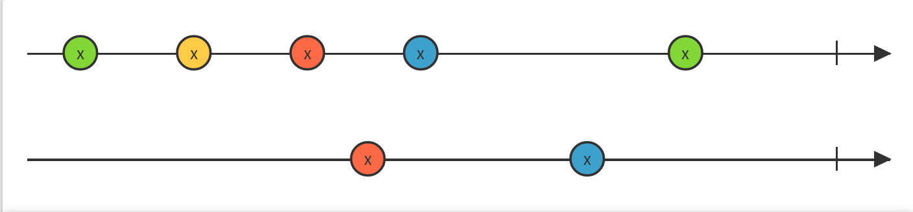

Testing can only show the presence, not the absence of bugs.
Edsger W. Dijkstra
Property based testing
with Cycle.js
Jan van Brügge
We cannot test everything
What can we do about that?
More tests!
How can we save us from even more work?
Do not write unit tests!
Generate them
What is property based testing?
- The set of possible inputs is too big (most likely \(\infty\))
- Manual unit tests pick a few, fixed values out of that set
- Why not pick all?
Write proberties in the form \(\forall a \in S: prop(a) = true\)

JSVerify
Write powerful and concise tests.
What do we need to generate unit tests?
We have to examine or code,
exploit mathematical properties we find
and check if the property holds true for every possible input.
Let's take a look, shall we?
DemoWhat did we just see?
- An arbitrary to generate random values
- A property: \(\forall a,b \in \mathbb Z : add(a, b) = a + b\)
- An assertion that the property should hold true
Any problem with this property?
add.ts
function add(a : number, b : number) {
return a + b;
}
add.test.ts
const property = forall(integer, integer, (a, b) => {
return add(a, b) === a + b;
}
We just reimplemented the function!
Other properties we could use
- Identity: \(\forall a \in \mathbb Z : a + 0 = a\)
- Commutative: \(\forall a,b \in \mathbb Z : a + b = b + a\)
- Associative: \(\forall a,b,c \in \mathbb Z : (a + b) + c = a + (b + c)\)
- Negation: \(\forall a \in \mathbb Z : a + (-a) = 0\)
Translated into code:
DemoShort recap
- Do not reimplement the function you are testing in your property
- It is fine to use multiple properties and combine them
Moving to Cycle.js
Let's test a counter app
DemoFinding a property

Using the property
DemoShort recap
- Use diagramArbitrary to generate random sequences of events
- Mock your DOM with them
- Use html-looks-like to test the resulting DOM
Writing own arbitraries
Let's take a look at the diagramArbitrary
DemoTesting more complex apps
adcs_plot
Ideas?
Possible properties
- Higher value in the data → higher value in the graph
- Relative vectical space between points has to be the same as the data
Implementation left as exercise for the viewer :)
So what to do now?
create-cycle-app name --flavor cycle-scripts-one-fits-all- JSVerify
- Slides and Code are on Github: github.com/jvanbruegge/cycleconf2017-talk
- Ask questions :)